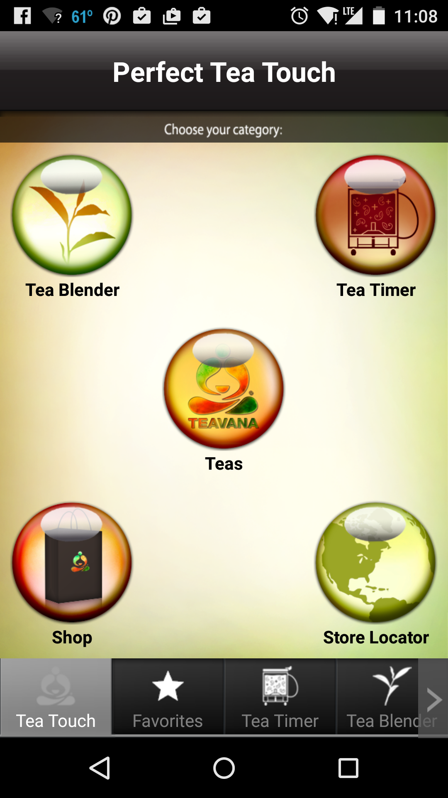
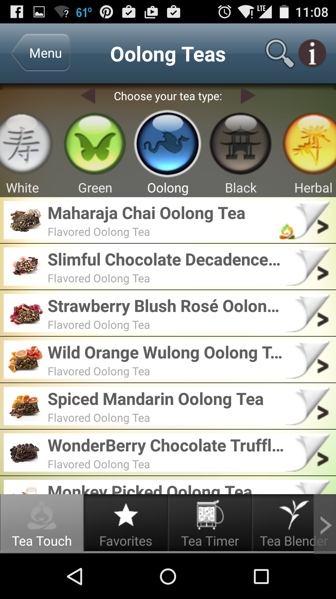

teaLife
In Progress, Mobile App
teaLife is a mobile app that helps the tea community discover new teas in a delightful way.
Try an alpha version at teaLife on your MOBILE device. This version is NOT optimized for desktop yet.
I'm interactive. Click!
inVision interactive prototype (work in progress)
Why teaLife?
I really enjoy tea, and love finding new teas to try. I couldn't find any Android app that helps users discover, acquire, and steep tea in a delightful way. Most tea apps have a menu of tea categories - "black," "rooibos," "herbal" - to browse. Part of these categories is based on oxidation levels while others are blends. What does "rooibos" or "chai" mean in terms of flavor? How do you know if you will like that tea? This type of tea organization makes it difficult for everyday people to find new teas. Tea Life helps users explore new teas through their flavor profiles.
How is the experience for Teavana's mobile app?
Teavana is one of the biggest tea chains in the United States. Teavana's app is one of the top apps that shows up on the Play Store.
- 
Home screen is very complicated
- 
Tea discovery is based on oxidation
Teavana has a complicated and outdated tea app. On the home screen, there's two navigation areas: 5 circular buttoms and a bottom nav. These two areas have duplicate items and can be confusing.
The tea discovery page has no other way for users to explore teas except based on oxidation levels. The tea page is also very hard to understand at a glance. It's overloaded with two long horizontal menus and buttons on the app bar. The design is also very skeumorphic with page turning drawing for each tea item. Page turning doesn't reenforce tea concepts which can distract the user instead of helping the user to find tea.
Designing teaLife
teaLife simplifies the home screen experience by focusing on the discovery problem. teaLife is also designed to be more accessible to users. Users find teas by "taste" filters such as "sweet" that can be understood by everyone. Another major difference between teaLife and other mobile tea apps is it follows a flatter design style, and uses only two colors primarily throughout the app. This makes it easier for users to focus on the content
If you are on a mobile device, you can try an alpha version at teaLife . This version is NOT optimized for desktop yet.